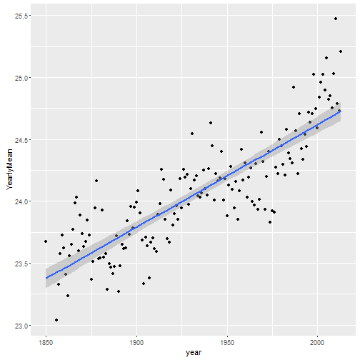

---
## Introduction
1. What is _it_?
2. What does it _do_?
3. Where can I _find_ it?
The ClimateChange app displays information on yearly temperature changes across all the continents as early as the year 1750!
---
## What is it?
The ClimateChange app displays information on yearly temperature changes across all the continents as early as the year 1750!
It draws pretty graphics such as.

---
## What does it do?
It draws pretty graphics such as.
```{r, echo=FALSE}
library(ggplot2)
climate <- read.csv("./data/climate.csv")
x <- climate[which(climate$Country %in% "Africa"),]
g <- ggplot(data = x, aes(x = year, y = YearlyMean)) +
geom_point() +
geom_smooth(method = lm)
g
```
I'm glad you asked, because you can find it at THIS link!
I hope you enjoy!
---
## Where can I find it?
I'm glad you asked, because you can find it at [THIS]( https://sndekoning.shinyapps.io/ClimateChange-App/) link!
I hope you enjoy!
| Climate Change App | 1 |
|---|---|
| Introduction | 2 |
| What is it? | 3 |
| What does it do? | 4 |
| Where can I find it? | 5 |
| Table of Contents | t |
|---|---|
| Exposé | ESC |
| Full screen slides | e |
| Presenter View | p |
| Source Files | s |
| Slide Numbers | n |
| Toggle screen blanking | b |
| Show/hide slide context | c |
| Notes | 2 |
| Help | h |